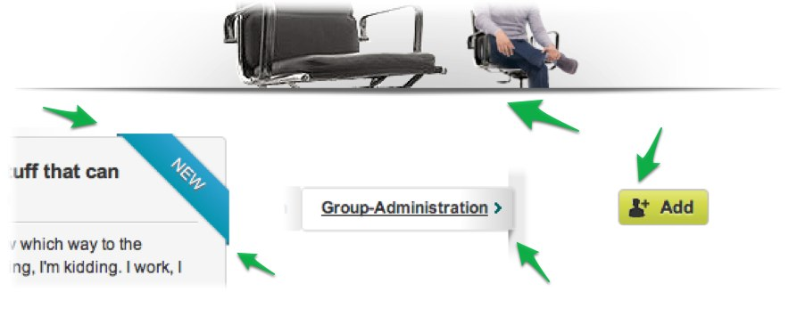
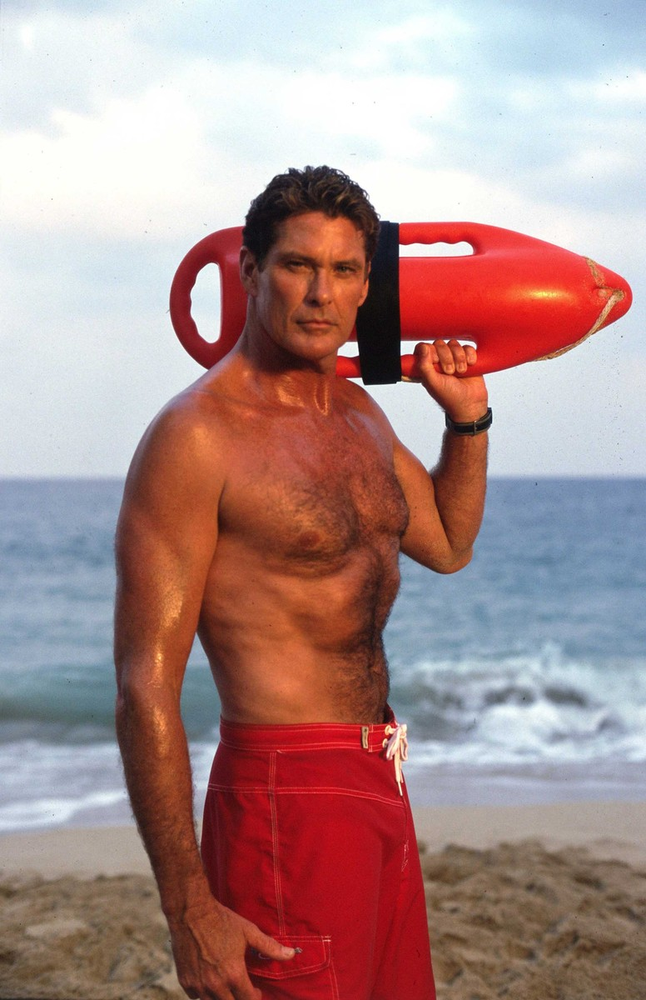

Ihre Gastgeber heute: Björn und Nils
Mit dieser kleinen Präsentation (Kaffee jemand?) wollen wir Euch zeigen, was man mit den modernen Webtechniken HTML5 und CSS3 samt JavaScript so alles machen kann.
Einige der Dinge, die wir zeigen werden, sind nicht in allen Browsern lauffähig. Dennoch möchten wir euch ermutigen auch solche neuen Features zu benutzen.
Nach dieser Session kennt ihr die wichtigsten, UX relevanten Features von HTML5/CSS3. Die Präsentation hier ist HTML basiert und kann inkl. aller Features noch einmal neu erlebt werden.
Mittlerweile ein Klassiker - Benutzt :before & :after
Absatz mit Bildchen davor & danach, die gar nicht da sind.
Wir benutzen die schon recht häufig auf der Plattform:
| Chrome | Firefox | Internet Explorer | Opera | Safari |
| ♥ | >3.5 | 9 | ♥ | >4 |
Am besten nur für rein dekorative Zwecke benutzen.
Wir können fast alles! Eine ganze Menge!
| Chrome | Firefox | Internet Explorer | Opera | Safari |
| ♥ | >3.6 | ± | >11 | ♥ |
Viele Browser-Präfixes = kostspielig.
Beispiel für Mindesthöhe und maximale Höhe. Das geht auch mit der Breite.
min-height: 200px;
max-height: 300px;
| Chrome | Firefox | Internet Explorer | Opera | Safari |
| ♥ | ♥ | ♥ | ♥ | ♥ |
Der IE6 kann's nicht. Aber: Who cares?
| Chrome | Firefox | Internet Explorer | Opera | Safari |
| ♥ | ♥ | 9+ | ♥ | ♥ |
| Chrome | Firefox | Internet Explorer | Opera | Safari |
| ♥ | ♥ | 9+ | >10.5 | ♥ |
One box with two background pictures. 1.) The landscape. 2.) The dude. (He would never read this paper in the public ...)
| Chrome | Firefox | Internet Explorer | Opera | Safari |
| ♥ | ♥ | 9+ | >10.5 | ♥ |
Der zweite Hintergrund sollte wirklich nur Deko sein. IE8 und 7 zeigen ihn nicht an.
Come to Hamburg!
| Chrome | Firefox | Internet Explorer | Opera | Safari |
| ♥ | ♥ | ♥ | ♥ | ♥ |
IEs benutzen nicht "normales" CSS, sondern MS-spezifische Filter. *seufz*
Da war es wieder das Geräusch. Er drehte sich rasch um und schaute in die Augen von einem Biest mit langen Fangzähnen.
Der Text geht natürlich noch weiter. Ganz spannend sogar. Aber da kein Platz vorhanden ist, schneidet der Browser ab und macht Auslasspunkte. - Benutzen wir schon auf der Seite.
| Chrome | Firefox | Internet Explorer | Opera | Safari |
| ♥ | ♥ | ♥ | ♥ | ♥ |
Li Europan lingues es membres del sam familie.
Li Europan lingues es membres del sam familie.
Li Europan lingues es membres del sam familie.
Li Europan lingues es membres del sam familie.
| Chrome | Firefox | Internet Explorer | Opera | Safari |
| ♥ | ♥ | ± | ♥ | ♥ |
IEs 7 und 8 können keinen Text-Schatten. IE9 nur mit ekligem Filter.
| Chrome | Firefox | Internet Explorer | Opera | Safari |
| ♥ | ♥ | 9+ | ♥ | ♥ |
Product 1Best icecream in town. You have to buy it. Otherwise we will two kittens each day. |
Product 2Definitely the best product you've ever seen. Don't know what it is for - but great stuff! |
Product 3Whatever you're doing - do it quick. Consume! Consume and obey! Quick. |
You want to buy me! You have to. You can't live without me!
| Chrome | Firefox | Internet Explorer | Opera | Safari |
| ♥ | ♥ | 10+ | ♥ | ♥ |
Nur ein "Schmankerl" ...?
| Chrome | Firefox | Internet Explorer | Opera | Safari |
| ♥ | — | — | — | ♥ |
Benötigt JavaScript-Fallback.
Wir benutzen es an einer Stelle: Login > "Passwort vergessen"
| Chrome | Firefox | Internet Explorer | Opera | Safari |
| ♥ | ♥ | — | ± | ♥ |
Animationen benötigen viele Präfixe. Und dann sind sie sehr verschachtelt. = Teuer.
Wenn, dann extrem sparsam einsetzen.
Was macht man mit zu langen Worten? - Man rappt sie! Ähhh ... Man man man man macht ein word-wrap.
| Chrome | Firefox | Internet Explorer | Opera | Safari |
| ♥ | ♥ | ♥ | ♥ | ♥ |
Ein bisschen technischer aber nicht minder spannend!
| Chrome | Firefox | Internet Explorer | Opera | Safari |
| ♥ | ♥ | 9+ | ♥ | ♥ |
Pures HTML5! Die Box hat ein contenteditable="true". Das ist alles.
Frage: Verstehen User das? Einfach direkt eintippen wie in einem Text-Editor?
Könnte Sicherheitsrisiko beinhalten ...
| Chrome | Firefox | Internet Explorer | Opera | Safari |
| ♥ | ♥ | ♥ | ♥ | ♥ |
Damit Ihr indess erkennt, woher dieser ganze Irrthum gekommen ist, und weshalb man die Lust anklagt und den Schmerz lobet, so will ich Euch Alles eröffnen und auseinander setzen, was jener Begründer der Wahrheit und gleichsam Baumeister des glücklichen Lebens selbst darüber gesagt hat. Niemand, sagt er, verschmähe, oder hasse, oder fliehe die Lust als solche, sondern weil grosse Schmerzen ihr folgen, wenn man nicht mit Vernunft ihr nachzugehen verstehe.
Wenig Support bisher, aber ein unglaublich effektives Features. Wenn das vom Browser nativ unterstützt wird, spart das eine Menge Arbeit.
Nutzen wir bisher im Hilfecenter.
| Chrome | Firefox | Internet Explorer | Opera | Safari |
| ♥ | ☹ | ☹ | ☹ | ☹ |
Neue Tags wie <article>, <header>, <footer>, <nav>, <aside>, <figure> geben neue semantische Möglichkeiten und verbessern die Möglichkeiten des Stylings.
Setzen wir verstärkt in Topics ein
Nicht unbedingt UX relevant ...
| Chrome | Firefox | Internet Explorer | Opera | Safari |
| ♥ | ♥ | ♥ | ♥ | ♥ |
Seid mutig! Seid verwegen! Wagt etwas! Lasst die Browser die Fehlermeldungen generieren.
| Chrome | Firefox | Internet Explorer | Opera | Safari |
| ♥ | ♥ | 10+ | ♥ | ♥ |
Your score is:
Your score is: -done-
| Chrome | Firefox | Internet Explorer | Opera | Safari |
| ♥ | ♥ | 10+ | ♥ | ☹ |
Beispiel Standortbestimmung
| Chrome | Firefox | Internet Explorer | Opera | Safari |
| ♥ | ♥ | 9+ | ♥ | ♥ |
Beispiel für persistente Nachrichten auf dem Desktop Twitter
| Chrome | Firefox | Internet Explorer | Opera | Safari |
| ♥ | ☹ | ☹ | ☹ | ☹ |
Ernsthaft, das ist komplett nativ !!!
| Chrome | Firefox | Internet Explorer | Opera | Safari |
| ♥ | ♥ | ☹ | ♥ | ♥ |
| Chrome | Firefox | Internet Explorer | Opera | Safari |
| ♥ | ♥ | ♥ | ♥ | ♥ |
Danke für die Aufmerksamkeit.